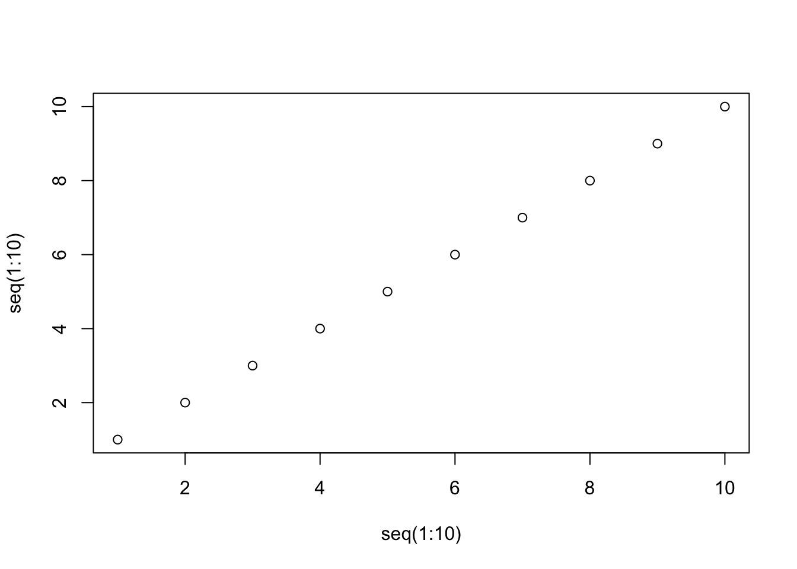

In this topic, we will cover:
Neither of these platforms/tools are essential to moving along the R experience ladder. The reason I decided to include them in a beginners R workshop is because they allow for some extremely valuable workflows related to sharing and collaboration. So, I think at least a little bit of exposure to these is useful early on in your RStudio journey.
“R Markdown provides an authoring framework for data science”
Using R Markdown, you are able to run code, share its output and provide commentary in the same document. This allows you to produce high quality R reports that you can share with an audience. For example, this entire R Workshop webpage was built using R Markdown.
It is a format of markdown, which is a plain text format (as opposed to a rich text format like MS Word).
The plain text format can make the barrier to entry for R Markdown a little bit tricky. But just like R scripts there are lots of examples out there and once you’ve tested it out you will get the hang of it quite quickly.
There are 3 major components to an R Markdown file:
a YAML header denoted by the ---s (this is
optional)
R code chunks denoted by ```s
Plain text combined with text formatting
YAML header
---
title: "Title here"
author: "Author here"
output:
pdf_document
---```{r}
1 + 1
```## [1] 2```{r}
plot(x = seq(1:10), y = seq(1:10))
```
# First-level header
## Second-level header
### Third-level header
*italics*
**bold**